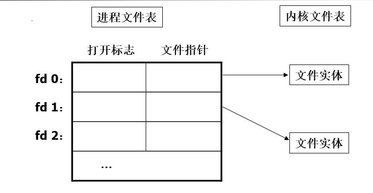
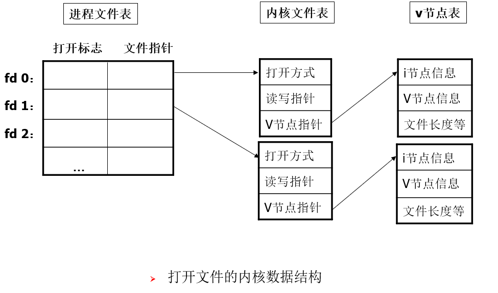
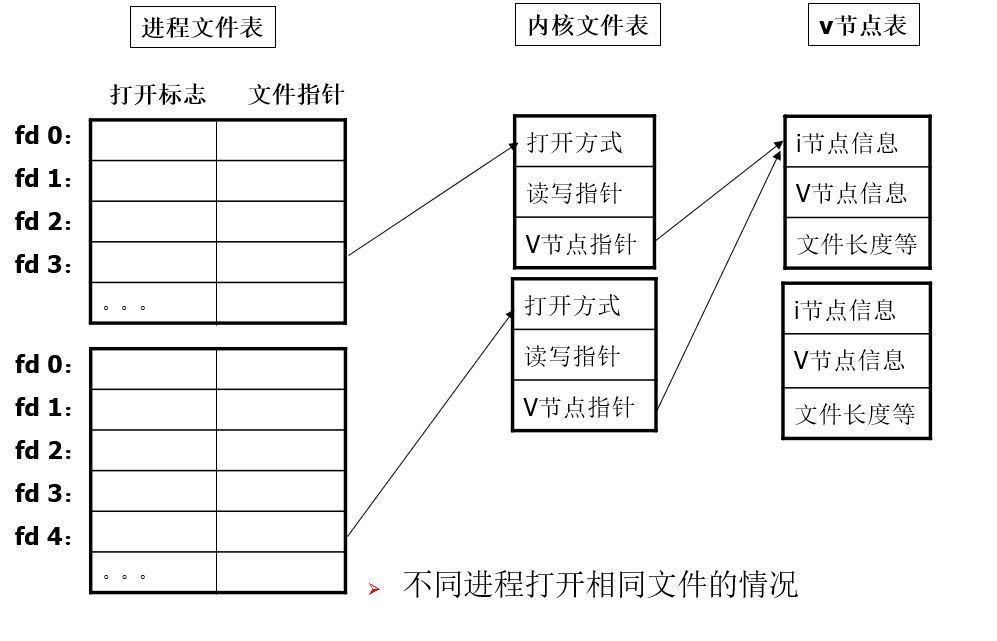
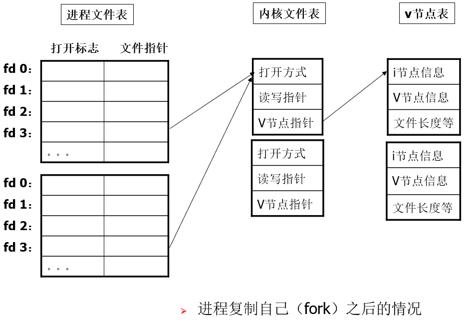
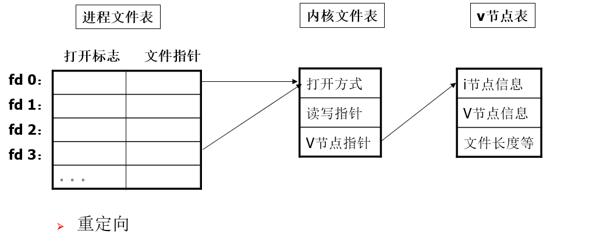
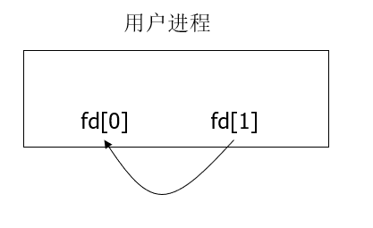
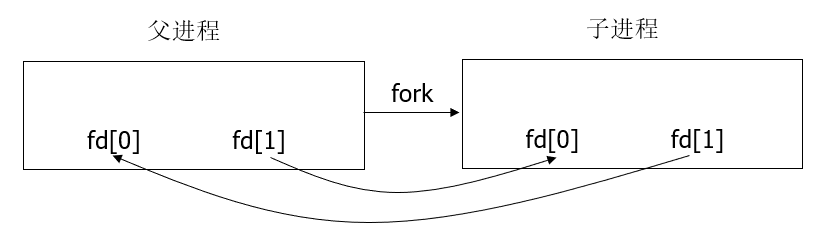

Unix 记忆留存 （三）
这是该系列第三篇，也是最后一篇
前言
本篇博客是笔者在学习Unix课程时所积累的学习笔记。
希望对后来学习Unix的友友复习准备Unix的期末考试有帮助。
系统调用
文件I/O
引言
基本文件I/O函数：open、creat、read、write、lseek、close
术语：不带缓冲的I/O（指每一个read、write都调用内核中的一个系统调用），低级例程。
文件描述符
一个非负的整数，一个结构数组的下标，进程打开的文件表项的下标。
open、creat函数会返回一个文件描述符

函数介绍
open
#include <fcntl.h>int open(const char *pathname, int oflag, [mode_t mode])
返回值：若成功，返回非负整数，即文件描述符。一定是当前“进程文件描述符表”中最小未使用的描述符。出错返回-1。
pathname:常量，文件名，绝对路径或相对路径均可。
oflag:打开方式选项。O_RDONLY、O_WRONLY、O_RDWR三者必须选其一。O_CREAT、O_APPEND、O_TRUNC等任意选择。多个选项进行“或”运算构成oflag选项。
mode:仅当oflag具有O_CREAT选项时，需要此参数，用于指定新建文件的访问权限。
creat
#include <fcntl.h>int creat(const char *pathname, mode_t mode)
返回值：若成功，返回非负整数，即文件描述符。出错返回-1
pathname:常量，文件名，绝对路径或相对路径均可。
mode:指定新建文件的访问权限。
等价于:
open(pathname, O_WRONLY|O_CREAT|O_TRUNC, mode)语义上creat简单，涉及原子操作，应当使用open。
close
#include <unistd.h>int close(int filedes)
返回值:若成功，返回0，出错返回-1
filedes:文件描述符
lseek
作用：移动文件“读写指针”（或称“文件偏移量”）。读写操作会自动移动文件读写指针。#include <unistd.h>off_t lseek(int filedes, off_t offset, int whence)
off_t: 与系统有关，通常是长整型
filedes: 文件描述符
whence: 移动偏移量的方式。0：绝对方式；1：相对方式；2：相对文件尾部
offset: 移动的距离，非绝对方式移动时，可以为负。
返回值: 新的文件偏移量。
read
作用：从已打开的文件中读取数据，自动移动文件读写指针。#include <unistd.h>ssize_t read(int filedes, void *buff, size_t nbytes)
ssize_t： 通常是整型，size_t通常是无符号整型。
filedes： 文件描述符
buff： 存放数据的缓冲区
nbytes： 需要读取的字节数
返回值：实际读取的字节数。正常读取时，返回值等于nbytes;遇到文件结束时，小于nbytes；出错返回-1
write
作用：将数据写入已打开的文件，自动移动文件读写指针。#include <unistd.h>ssize_t write(int filedes, void *buff, size_t nbytes)
ssize_t: 通常是整型，size_t通常是无符号整型。
filedes: 文件描述符
buff: 存放数据的缓冲区
nbytes: 需要写入的字节数
返回值：实际写入的字节数。正常写入时，返回值等于nbytes;磁盘空间满时，小于nbytes（这种情况也可以认为是出错）；出错返回-1
dup2
#include <unistd.h>int dup2(int filedes1, int filedes2)
作用：将文件描述符filedes1的表项复制给filedes2的表项。如果filedes2已经打开，则先将其关闭。
返回值：正常返回filedes2，出错返回-1
link
# include <unistd.h>int link(const char *existingpath, const char *newpath)
作用： 创建一个新的目录项newpath，指向一个现有的文件existingpath。
unlink
int unlink(const char *pathname)
作用：删除一个目录项，对应文件的链接数减1。
remove
#include <stdio.h>int remove(const char *pathname)
作用：删除一个文件或目录的链接。
rename
#include <stdio.h>rename(const char *oldname, const char *newname)
作用：文件或目录更名。
mkdir
# include <sys/stat.h>int mkdir(const char *pathname, mode_t mode)
作用：创建一个目录。
rmdir
# include <unistd.h>int rmdir(const char *pathname)
作用：删除一个空目录。
目录文件读函数
1 |
|
位置函数
改变进程的当前工作目录 //cd命令# include <unistd.h>int chdir(const char *pathname)int fchdir(int filedes)
获取当前工作目录 //pwd命令#include <unistd.h>char *getcwd(char *buff, size_t size)
文件组织架构
- 一般UNIX文件组织架构如下：

fd就是前面一直提到的文件描述符。
- 不同进程打开相同文件的情况：

其实也很好理解，首先由于fd要互斥，所以fd一定不同。
且重复打开某个文件，肯定要求读写指针不能相同，否则就会互相影响。
但文件是同一个文件，所以连到同一个V节点。
- fork之后的情况

这个也很好理解，fork就相当于复制了一份原进程，自然保持一模一样。
- 重定向

dup2(3,0) 将进程文件表中的表项3复制给表项0 ——标准输入重定向
dup2(3,1) 将进程文件表中的表项3复制给表项1 ——标准输出重定向
文件属性和目录
结构
1 | struct stat { |
配套函数
int stat(const char *pathname, struct stat *buf)
作用：获取文件信息。int fstat(int filedes, struct stat *buf)
作用：由文件描述符取得文件的状态。
文件类型
普通文件、目录文件、字符设备文件、块设备文件、 FIFO、符号链接、套接字
判断文件类型
1 | S_ISREG(mode_t mode) //是否普通文件 |
文件的权限
- 9个普通权限位
S_IRUSER, S_IWUSER, S_IXUSER //用户权限位
S_IRGRP, S_IWGRP, S_IXGRP //用户组权限位
S_IROTH, S_IWOTH, S_IXOTH //其他用户权限位 - 3个特殊权限位（针对可执行文件）
S_ISUID 执行时设置有效用户ID，如passwd命令文件
S_ISGID 执行时设置有效用户组ID
S_SVTX 第一次执行时，保存正文，即常驻内存。
创建文件
新文件的用户ID、组ID等于创建进程的有效用户ID和组ID
新文件的权限由指定权限和屏蔽字共同决定。
- 指定权限，open和creat函数中给出的权限。
- 屏蔽字（umask值），被umask屏蔽的权限位即使在open或creat中指定了也会被屏蔽掉。
#include <sys/stat.h>mode_t umask(mode_t mode)- umask函数设置当前屏蔽字，返回以前的屏蔽字。
进程控制
获取进程
#include <unistd.h>pid_t getpid(void) 获取调用者的进程IDpid_t getppid(void) 获取调用者的父进程ID。
创建进程
#include <unistd.h>pid_t fork(void)
功能：创建一个新的进程，新进程是旧进程的副本。旧进程叫父进程，新进程叫子进程。
返回值：fork函数调用一次，返回两次。在父进程中返回子进程的ID，在子进程中返回0，出错返回-1
目的：并行，运行新程序。
运行新程序
父进程fork一个子进程后，子进程往往需要调用一个exec函数来运行一个新程序。
否则，这个fork我个人认为是没意义的。
exec函数用一个新程序替换调用进程原有的代码、数据、堆栈等，新程序从头开始执行。exec不产生新的进程，所有调用前后的进程号不发生变化。
exec函数有很多，并不指具体一个函数：1
2
3
4
5
6
7
int execl(const char *pathname, const char *arg0,…,(char *)0)
int execv(const char *pathname, char *const argv[])
int execle(const char *pathname, const char *arg0,…,(char *)0, char *const envp[])
int execve(const char *pathname, char *const argv[], char *const envp[])
int execlp(const char *filename, const char *arg0,…,(char *)0)
int execvp(cons char *filename, char *const argv[])
1) execl和execlp比较直观，类似命令行输入，推荐使用。
2）execve是系统调用，其他是库函数。
3）返回值：正常不返回，出错返回-1
进程等待
通过wait函数实现：1
2
3
4
pid_t wait(int *statloc)
pid_t waitpid(pid_t pid, int *statloc, int options)
waitid、wait3、wait4等
进程通信
- 全称：IPC（Interprocess Communication）
- 包括：半双工管道、半双工命名管道（FIFO）、全双工管道、全双工命名管道、消息队列、信号量、共享存储、套接字、STREAMS
- 使用习惯：
套接字可支持不同主机的进程间通信（网络通信），其他为主机内通信。
主机内通信常用半双工管道，网络通信常用套接字。
半双工管道
是所有UNIX系统都提供的一种通信方式。
特点：
1）半双工的工作方式。通信方向是双向的，但只能选择其中一种。
2）只能在具有公共祖先的进程之间使用。通常是父子进程之间。
创建：#include <unistd.h>int pipe(int filedes[2])
创建一个管道，若成功返回0，不成功返回-1；
由参数filesdes返回两个文件描述符: filedes[0]、filesdes[1]， filedes[0]为读而打开， filedes[1]为写而打开。

创建管道之后的情形如上图所示。将数据写入fd[1]，从fd[0]中读出。
管道在单个进程中没有意义，通常在pipe函数之后，立刻会调用fork，产生一个子进程，情形如下图所示：

fork之后，选择通信方向:
如果父进程写、子进程读，则父进程close fd[0]，子进程close fd[1]；
反之，子进程关闭fd[0]，父进程关闭fd[1]。
规则：
1）写端关闭时，read函数返回0，表示文件结束；
2）读端关闭时，write函数返回-1，并且出现SIGPIPE异常（信号）。
常量PIPE_BUF规定了内核管道缓冲区大小，每次write的字节数需小于PIPE_BUF
举例：（父进程写，子进程读）1
2
3
4
5
6
7
8
9
10
11
int fd[2]; char line[MAXLINE];
pipe(fd);
if (pid=fork() >0){ //父进程
close(fd[0]);
write(fd[1],"hello world!\n", 12);
}
else if (pid==0)｛ //子进程
close(fd[1]);
read(fd[0], line, MAXLINE);
}
命名管道
命名管道是一种文件1
2
3
4$ mkfifo f1 //建立管道
$ ls -l f1 //可以看到f1的权限什么的，确实说明是一个文件
$ cat < f1 //将f1中的内容打印
$ ls -l > f1 //输出目录到f1中
函数：#include <sys/stat.h>int mkfifo(const char *pathname, mode_t mode)
进程结束
无论进程如何结束，都会执行内核中的一段代码：关闭所有打开文件，释放占用的内存。
进程结束时，内核会保存其终止状态，直到该进程的父进程取走其状态。
正常结束
文件共享
fork之后，所有父进程打开的文件描述符都被复制到子进程中。父子进程相同的文件描述符指向相同的内核文件表，具有相同的文件偏移量。如果父子进程同时操作相同的文件，则需要同步机制，否则会产生混乱。
一般情况下，应该尽量回避父子进程同时操作相同文件的情况。1）父进程等待子进程结束后再运行；2）父子进程运行不同的程序段，使用不同的文件。
信号
简介
信号是一种异步事件，通常是非正常情况，如：人为终止进程、除数为0、非法内存访问等。所谓“异步”，指信号的出现是随机的。
产生
- 人为按下中断键 Ctrl_C
- 用户使用kill命令
- 进程调用kill函数
- 程序运行错误，除数为0、非法内存访问
- 软件产生的信号：闹钟超时、写一个读端已关闭的管道、网络传来带外数据。——这些基本是可以预见的信号。
处理
系统默认处理或忽略。
捕捉信号 通知内核在某种信号发生时调用一个用户函数。函数
signal函数
#inclucde <signal.h>void (*singnal(int signo, void (*func)(int)))(int)
这个函数比较抽象，需要好好理解：void (*func)(int)一个函数指针，所指向的函数需要一个整型参数，无返回值。singnal(int signo, void (*func)(int)), signal函数有两个参数，一个整型，一个函数指针。void (*signal(…))(int)signal的返回值也是一个函数指针，所指向的函数需要一个整型参数，无返回值。捕捉实例：
1
2
3
4
5
6
7
8
9
10signal(SIGINT, my_sig);
signal(SIGALRM, my_sig);
void my_sig(int signo){
if (signo==SIGINT){
…
}
else if(signo==SIGALRM){
…
}
}alarm函数
#include <unistd.h>unsigned int alarm(unsigned int seconds)
按秒设置下一次闹钟的时间。
返回值，如果以前设置过闹钟，再次设置时返回上一次设置时间的余数；否则返回0。
alarm函数设置的时间到达时，产生SIGALRM信号。该信号的默认动作是终止程序。进程控制中的信号处理
fork时，子进程继承父进程的信号处理。
exec时，恢复系统默认设置重入问题
信号处理程序可以被中断，中断时可能导致信号处理程序重新进入（再次被调用）。
printf不可重入，大多数标准IO库函数不可重入。
信号处理程序应尽可能简单，尽可能不用库函数。
结语
到这里，我的笔记也就分享完毕了，大概核心就是PPT内容加我的注解。感叹Unix虽然只有8节课，但也已经将Unix讲的五脏俱全。
这门课对于OS也还是有一定的帮助，毕竟Unix就是一个活生生的操作系统嘛。